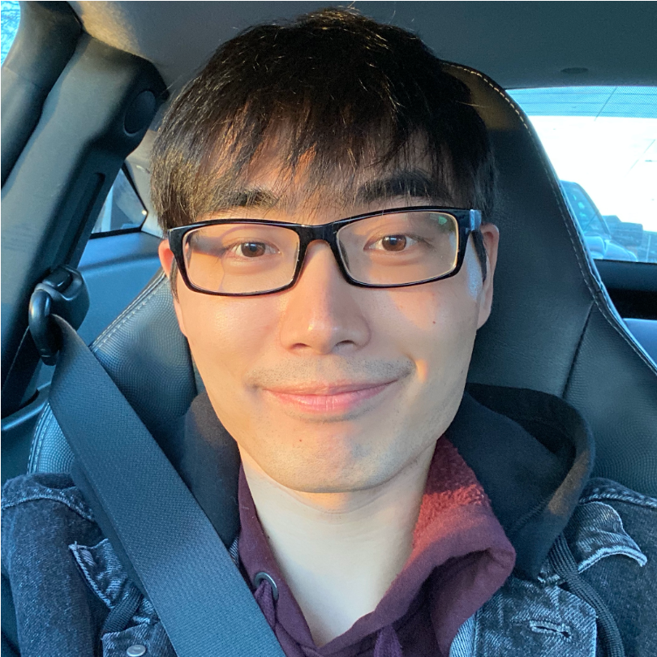

|
Huan Wang
Welcome to my webpage! My name is Huan Wang (Chinese: 王欢. My first name means "happiness or joy" in Chinese, a simple and
ultimate wish from my parents).
I am now a 4th-year Ph.D. candidate at SMILE Lab, Northeastern University (Boston,
USA), advised by Prof. Yun (Raymond) Fu. Before that,
I received my M.S. (2019) and B.E. (2016) degrees from Zhejiang University (Hangzhou, China), advised by Prof. Haoji Hu. During
2018 summer, I visited VLLab at University of California, Merced,
luckily working with Prof. Ming-Hsuan Yang.
I also actively collaborate with fatanstic industrial researchers from Snap / MERL / Meta / Alibaba Group, etc.
My research works orbit Efficient Deep Learning (a.k.a. Model Compression), spanning the most common image classifcation task (GReg, Pruning-at-Initialization Survey, TPP) to neural style transfer (Collaborative-Distillation, single image super-resolution (ASSL/GASSL, SRP) and 3D novel view synthesis / NeRF / NeLF (R2L, MobileR2L).
I do my best towards easily reproducible research.
Google Scholar
/
GitHub /
LinkedIn /
Twitter
|

|
News
- 2023/05: [Talk] Give a talk at ZJUI on the recent advances in efficient neural light field (NeLF), featuring our two recent NeLF papers (R2L and MobileR2L). [Slides]
- 2023/05: [Award] Recognized as CVPR'23 Outstanding Reviewer (3.3%). Thanks to CVPR and the ACs!
- 2023/04: [TPAMI'23] Extension of our NeurIPS'21 spotlight paper
ASSL, "Global Aligned Structured Sparsity Learning for Efficient Image Super-Resolution", is accepted by TPAMI (IF=24.31). Code will be relased to the
same repo.
- 2023/03: [Award] Received ICLR'23 travel award. Thanks to ICLR!
- 2023/02: [CVPR'23] 2 papers accepted by CVPR'23: (1) MobileR2L [Code]
, congrats to Junli! MobileR2L is a blazing fast🚀 neural rendering model designed for mobile devices: It can render 1008x756 images at 56fps on iPhone13. (2) Frame Flexible
Network [Code], congrats to Yitian!
- 2023/01: [ICLR'23] 2 papers accpeted by ICLR'23: Trainabaility Preserveing Neural
Pruning (TPP) and Image as Set of Points
(Oral, top-5%).
- 2023/01: [Internship'23] Start part-time internship at Snap, luckily working with
the Creative Vision team again.
- 2023/01: [Preprint] 🔥Check out our preprint work that deciphers the so confusing
benchmark
situation in neural network (filter) pruning: Why is the State of Neural Network Pruning so Confusing? On the Fairness, Comparison Setup, and Trainability in Network Pruning
[Code]. Also give a talk @UT Austin about this work. Thanks for the warm invitation from Dr. Shiwei Liu and Prof. Atlas Wang!
- 2022/10: [Award] Received NeurIPS'22 Scholar Award. Thanks to NeurIPS!
- 2022/09: [NeurIPS'22] 3 papers accepted by NeurIPS'22: One under my lead (which was my 1st
internship work at MERL in 2020 summer. Rejected 4 times. Now finally I close the loop. Thanks to
my co-authors and the reviewers!), two collaborations. Code: Good-DA-in-KD, PEMN, AFNet.
- 2022/09: [TIP'22] One journal paper "Semi-supervised Domain Adaptive
Structure Learning" accepted by TIP. Congtrats to Can!
- 2022/07: [ECCV'22] We present the first residual MLP network to represent neural
light
field
(NeLF) for efficient novel view synthesis. Check our webpage and ArXiv!
- 2022/04: [IJCAI'22] We offer the very first survey paper on Pruning at
Initialization,
accepted by IJCAI'22 [ArXiv] [Paper Collection].
- 2022/01: [ICLR'22] Two papers on neural network sparsity accepted by ICLR'22. One is
about
efficient image super-resolution (SRP),
the other about lottery ticket hypothsis (DLTH).
- 2021/09: [NeurIPS'21] One paper on efficient image super-resolution is accepted by
NeurIPS'21
as a Spotlight (<3%) paper! [Code]
- 2021/06: [Internship'21] Start summer internship at Snap Inc., working with the
fantastic Creative
Vision team.
- 2021/01: [ICLR'21] One paper about neural network pruning accepted by ICLR'21 as
poster. [ArXiv] [Code]
- 2020/06: [Internship'20] Start summer internship at MERL, working with Dr. Mike Jones and
Dr.
Suhas Lohit. (2022/09 Update: Finally, paper of this
project accpeted by NeurIPS'22 -- two good years have passed, thank God..!)
- 2020/02: [CVPR'20] One paper about model compression for ultra-resolution neural
style
transfer "Collaborative Distillation for Ultra-Resolution Universal Style Transfer" is accepted by CVPR'20 [Code].
- 2020/01: [MLSys'20] 2019 summer intern paper accepted by MLSys
2020. (Project: MNN from Alibaba, one of
the
fastest mobile AI engines on this planet. Welcome trying!)
- 2019/12: [JSTSP'19] One journal paper "Structured Pruning for Efficient Convolutional Neural Networks via Incremental Regularization" accepted by IEEE
JSTSP.
- 2019/09: Join SMILE Lab at Northeastern University (Boston, USA) to pursue my Ph.D. degree.
- 2019/07: [Internship'19] Start summer internship at Taobao of Alibaba Group (
Hangzhou,
China).
- 2019/06: Graduate with M.Sc. degree from Zhejiang University (Hangzhou, China).
|
|
|
Why is the State of Neural Network Pruning so Confusing? On the Fairness, Comparison Setup, and Trainability in Network Pruning
Huan Wang, Can Qin, Yue Bai, Yun Fu
Preprint, 2023
 ArXiv
ArXiv
 Code
Code
|
|
|
Global Aligned Structured Sparsity Learning for Efficient Image Super-Resolution
Huan Wang*, Yulun Zhang*, Can Qin, Luc Van Gool, Yun Fu (*Equal Contribution)
TPAMI, 2023
PDF
Code
|
|
|
Real-Time Neural Light Field on Mobile Devices
Junli Cao, Huan Wang, Pavlo Chemerys, Vladislav Shakhrai, Ju Hu, Yun Fu, Denys Makoviichuk,
Sergey Tulyakov, Jian Ren
In CVPR, 2023
Project Webpage
ArXiv
Code
|
|
|
Trainability Preserving Neural Pruning
Huan Wang, Yun Fu
In ICLR, 2023
OpenReivew
ArXiv
PyTorch Code
|

|
Image as Set of Points
Xu Ma, Yuqian Zhou, Huan Wang, Can Qin, Bin Sun, Chang Liu, Yun Fu
In ICLR (Oral, 5%), 2023
Project Webpage
OpenReview
PyTorch Code
|
|
|
What Makes a "Good" Data Augmentation in Knowledge Distillation -- A Statistical Perspective
Huan Wang, Suhas Lohit, Mike Jones, Yun Fu
In NeurIPS, 2022
Project Webpage
ArXiv
PyTorch Code
|
|
|
Parameter-Efficient Masking Networks
Yue Bai, Huan Wang, Xu Ma, Yitian Zhang, Zhiqiang Tao, Yun Fu
In NeurIPS, 2022
ArXiv
PyTorch Code
|
|
|
Look More but Care Less in Video Recognition
Yitian Zhang, Yue Bai, Huan Wang, Yi Xu, Yun Fu
In NeurIPS, 2022
ArXiv
PyTorch Code
|

|
R2L: Distilling Neural Radiance Field to Neural Light Field for Efficient Novel View
Synthesis
Huan Wang, Jian Ren, Zeng Huang, Kyle Olszewski, Menglei Chai, Yun Fu, Sergey Tulyakov
In ECCV, 2022
Project Webpage
ArXiv
PyTorch Code
|
|
|
Recent Advances on Neural Network Pruning at Initialization
Huan Wang, Can Qin, Yue Bai, Yulun Zhang, Yun Fu
In IJCAI, 2022
ArXiv
Paper Collection
|
|
|
Learning Efficient Image Super-Resolution Networks via Structure-Regularized Pruning
Huan Wang*, Yulun Zhang*, Can Qin, Yun Fu (*Equal Contribution)
In ICLR, 2022
Open Review
PyTorch Code
|
|
|
Dual Lottery Ticket Hypothesis
Yue Bai, Huan Wang, Zhiqiang Tao, Kunpeng Li, Yun Fu
In ICLR, 2022
Open Review, ArXiv
PyTorch Code
|
|
|
Aligned Structured Sparsity Learning for Efficient Image Super-Resolution
Huan Wang*, Yulun Zhang*, Can Qin, Yun Fu (*Equal Contribution)
In NeurIPS (Spotlight, <3%), 2021
Camera Ready
PyTorch Code
|
|
|
Neural Pruning via Growing Regularization
Huan Wang, Can Qin, Yulun Zhang, Yun Fu
In ICLR, 2021
ArXiv, OpenReview
PyTorch Code
|
|
|
Collabrotive Distillation for Ultra-Resolution Universal Style Transfer
Huan Wang, Yijun Li, Yuehai Wang, Haoji Hu, Ming-Hsuan Yang
In CVPR, 2020
ArXiv, Camera
Ready
PyTorch Code
|
|
|
MNN: A Universal and Efficient Inference Engine
Xiaotang Jiang, Huan Wang, Yiliu Chen, Ziqi Wu, et al
In MLSys (Oral), 2020
ArXiv
Code
|
|
|
Structured Pruning for Efficient ConvNets via Incremental Regularization
Huan Wang, Xinyi Hu, Qiming Zhang, Yuehai Wang, Lu Yu, Haoji Hu
In NeurIPS Workshop, 2018; IJCNN, 2019 (Oral); Journal
extension to IEEE JSTSP, 2019
NeurIPS
Workshop,
IJCNN,
JSTSP
Caffe Code
|
|
|
Structured Probabilistic Pruning for Convolutional Neural Network Acceleration
Huan Wang*, Qiming Zhang*, Yuehai Wang, Haoji Hu (*Equal Contribution)
In BMVC, 2018 (Oral)
ArXiv, Camera Ready
Caffe Code
|
Professional Services
- Journal Reviewer: IJCV, TIP, TNNLS, PR, JSTSP, Neurocomputing, etc.
- Conference Reviewer: CVPR'22, ECCV'22, ICML'22, NeurIPS'22, ICLR'22, AAAI'23, IJCAI'23, CVPR'23, MLSys'23, ICCV'23, NeurIPS'23 etc.
|
|
{kind=link}